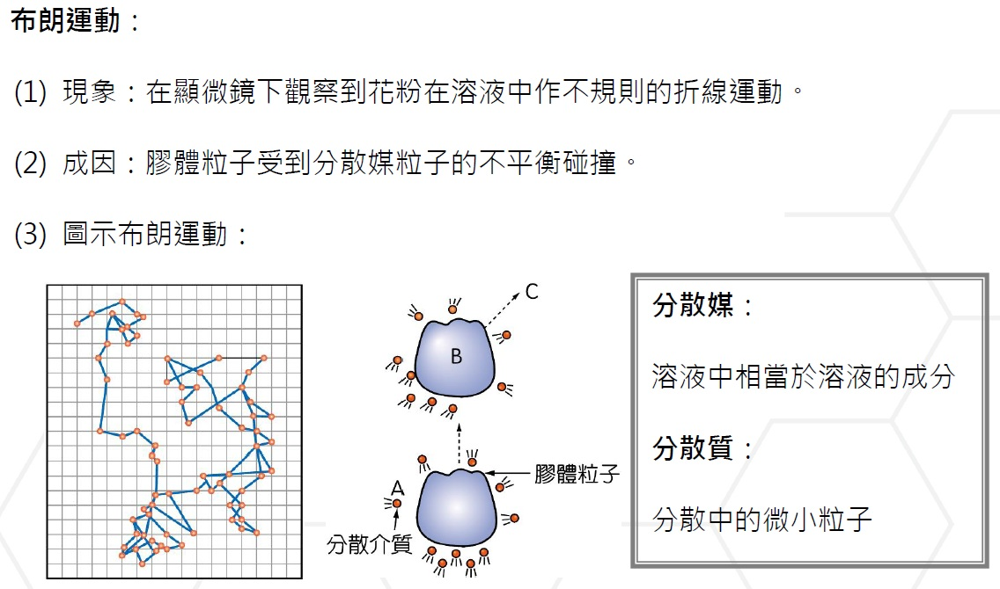
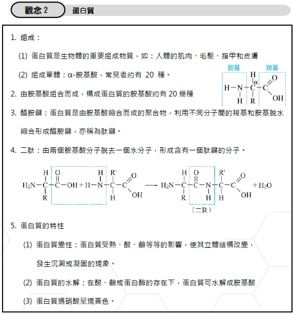
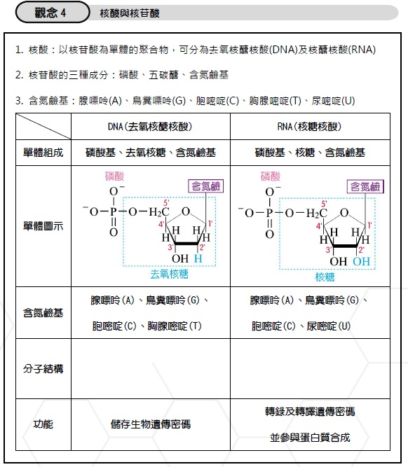

課程特色
- ✔ 圖像記憶： 利用圖表簡化複雜實驗與觀念，讓艱深的學科容易理解。
- ✔ 學測精準導向： 針對學測考試方向作主題性的組織與觀念統整，建立清楚架構。
- ✔ 高效重點掌握： 用最短的時間掌握最新學測重點，熟悉必考題型。
- ✔ 全科全面統整： 統整高一、二所學的物理、化學、生物及地科課程，建立完整學習方式。
圖像化解說：把複雜變簡單

布朗運動
透過不規則折線運動圖示，理解膠體粒子受分子碰撞的微觀真相。

蛋白質結構與特性
利用分子結構式解說「肽鍵」形成，一眼看懂氨基酸如何脫水縮合。

DNA vs RNA
對照表清晰呈現五碳醣與鹼基差異，快速掌握生物遺傳密碼的核心概念。